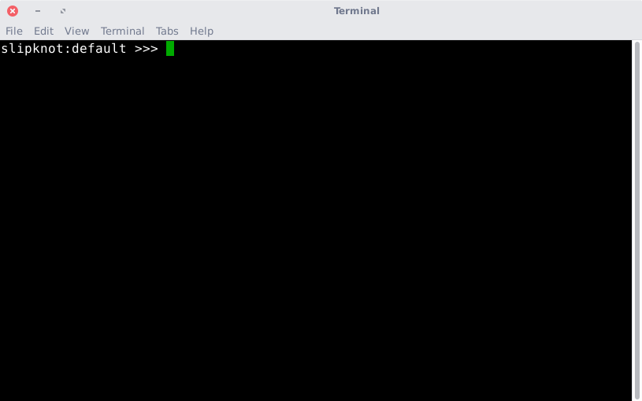

This is Slipknot.

Slipknot is a command line interpreter, built for Linux and macOS. Its job is to reduce the number of keystrokes needed to perform complicated tasks. It performs this task with the use of a database, which contains a set of equivalence statements or keys. A typical key would look something like this:
update = sudo apt-get update && sudo apt-get upgrade
With this key in your database, you could type update and
sudo apt-get update && sudo apt-get upgrade would execute.
Anyway, that's the basic gist. This software has some quirks, most of them
intentional, but that's covered in the Documentation part of this site.
I've added some other small scripts to this that I've written to do little
things; these are found in the slipknot/apps folder. They are
summarized here:
| Script | Use |
| get.py | Installs an Ubuntu/Debian package and runs it. Assumes yes to all prompts -- use this one carefully. |
| kill.py | Using apt-get, this script stops a running program, uninstalls it, uninstalls any dependencies that came with it (and aren't being used for something else) and purges the files. Also assumes yes to all prompts -- use this one carefully too. |
| search/google.py | Searches Google. |
| search/reddit.py | Searches Reddit. |
| search/stack_overflow.py | Searches Stack Overflow. |
| search/template.py | A template for making other search tools. (If you do add other tools, would you mind sending them to me? Fork this and put in a pull request.) |
| search/twitter.py | Searches Twitter. |
| search/whitepages | Searches the WhitePages reverse phone directory for a given phone number. |
| search/wikipedia.py | Searches Wikipedia. |
I hope you find these tools useful. I welcome feedback and constructive criticism. If you find something that doesn't work, I appreciate bug reports. Thank you!